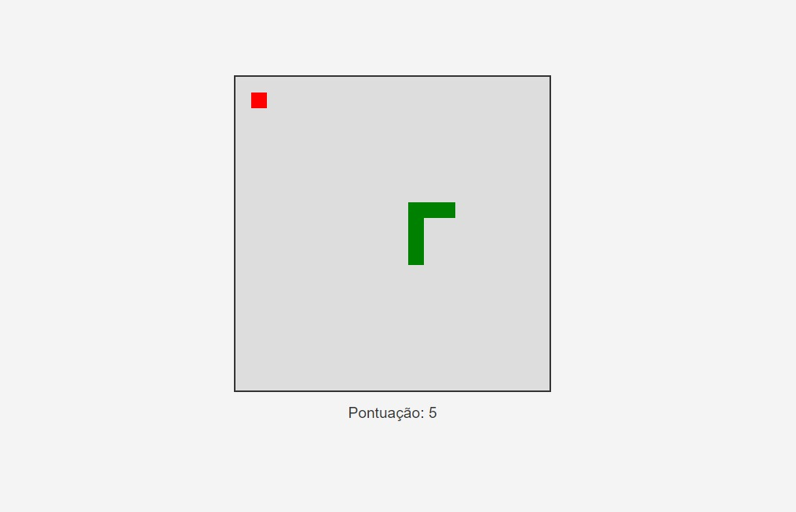

Sobre o Projeto
Este projeto é um típico jogo de cobrinha, onde a cobrinha come as maçãs e vai crescendo de tamanhoEste projeto é um típico jogo de cobrinha, onde a cobrinha come as maçãs e vai crescendo de tamanho.
Com a finalidade de aprender mais sobre as linguagens de programação, fiz esse jogo em HTML, CSS e JavaScript. Consegui aprender muito trabalhando nisso! Com um layout simples, porém foi meu primeiro projeto nesse estilo.

Faça o Download
Interessado no projeto? Baixe o código-fonte e explore como este jogo foi construído.
Baixar Projeto